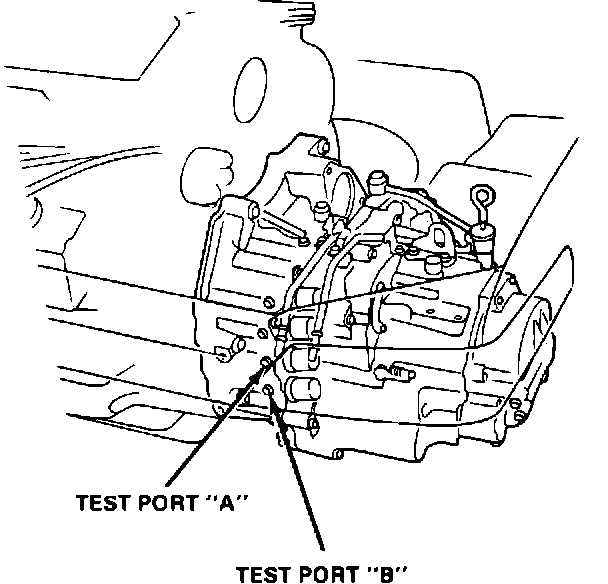
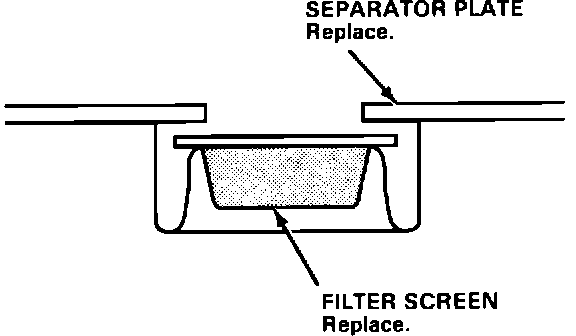

No A/T Upshift Past 2ND Gear
88acura03November 7, 1988
YEAR 1988
MODEL LEGEND ALL
VIN APPLICATION up to trans. L5-2021742
BULLETIN NO. 88-011
No A/T Upshift Past 2nd Gear (Supersedes 88-011, dated April 25, 1988)
SYMPTOM
Transmission will not upshift past 2nd gear.
NOTE: This symptom may not cause the S3 light to flash or the EAT ECU to have a code.

DIAGNOSIS
Perform a modulator pressure test as described.
1. Install the pressure gauges to the test ports adjacent to shift solenoids "A" and "B" on the torque converter housing.
2. Jack up the front of the car and support it with jack stands.
^ Check the first gear solenoid pressure by engaging Drive at idle, with the wheels spinning. The gauge readings should be:
5 kg/cm2 (71 psi) on solenoid "A". 0 kg/cm2 (0 psi) on solenoid "B".
NOTE: You will need an assistant to apply the brakes for the following checks.
^ Check the 2nd gear solenoid pressure: Engage manual second with the engine at idle, wheels stopped. The gauge readings should be:
0 kg/cm2 (0 psi) on solenoid "A". 0 kg/cm2 (0 psi) on solenoid "B".
^ Check the 3rd gear solenoid pressure: Engage reverse with the engine at idle, wheels stopped. The gauge readings should be:
0 kg/cm2 (0 psi) on solenoid "A". 5 kg/cm2 (71 psi) on solenoid "B".
^ Check the 4th gear solenoid pressure: Engage neutral, wait 5 seconds with the engine at idle, wheels stopped. The gauge readings should be:
5 kg/cm2 (71 psi) on solenoid "A". 5 kg/cm2 (71 psi) on solenoid "B".
^ If the solenoid pressures are all correct, replace the ECU with a known good one and test drive.
^ If any of the solenoid pressures are not correct, proceed to corrective action.
CORRECTIVE ACTION
1. Remove and disassemble the transmission as described in the appropriate service manual.
2. Check the reverse gears for damage and examine the differential for signs of seizure.
NOTE: If metallic particles are found in the transmission or solenoid filter screens, replace the filter screens, the solenoids and the torque converter. Be sure to flush the oil cooler and lines.

3. Replace the secondary valve body separator plate and the filter screen with the new parts listed under parts information.
NOTE: The proper installation of the new screen is with the "dome" away from the separator plate.
PARTS INFORMATION
Filter, solenoid: 27750-PL5-J00
Plate, secondary, separator: 27712-PL5-J03
Gasket kit C: 061C1-PL5-000
WARRANTY CLAIM INFORMATION
DESCRIPTION OPS # F.R.T.
Replace secondary separator 218135 9.5
plate and filter:
Check modulator pressure and 218140 1.3 replace ECU:
Failed P/N: 27712-PG4-000
Defect code: 033
Contention code: C99